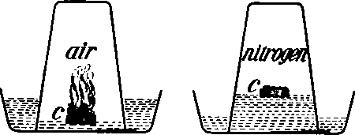
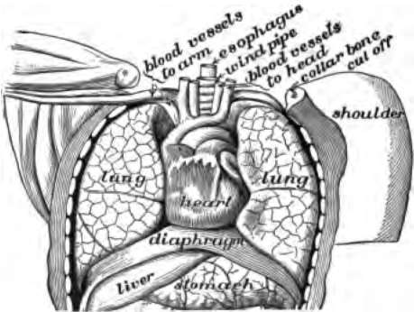
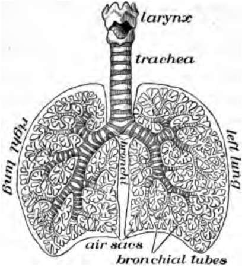
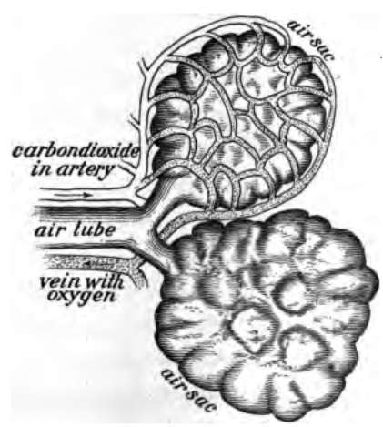
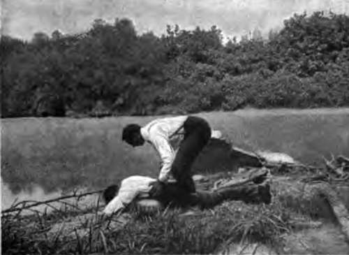
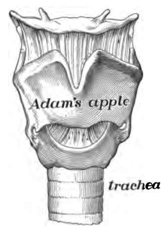
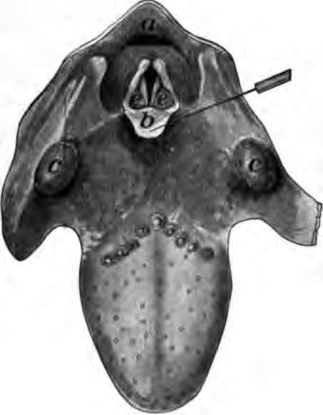

Chapter X. Breathing And Its Use
Description
This section is from the book "The Human Body And Health", by Alvin Davison. Also available from Amazon: The Human Body and Health.
Chapter X. Breathing And Its Use
What Air Is Made Of
Air is a mixture of four parts of nitrogen and one part of oxygen. This may be shown by placing a match head on a bit of floating wood in a pan of water and turning a glass over it as soon as lighted. The burning of the match head will use up all of the oxygen under the glass, and the water will then rise one fifth of the height of the glass to take the place of the oxygen.
Fig. 63. Experiment to show amount of oxygen in air. The match heads in burning at the left have used up the oxygen so that the water rises to take its place as shown at the right.
Why We Breathe
Air is breathed into the lungs so that the blood can get the oxygen out of it and carry it to the cells of the body. Animals cannot live without oxygen. Even such little creatures as flies must have oxygen supplied to every cell in their bodies. Flies, caterpillars, and all other insects, have tubes branching throughout their bodies to carry air. Openings to these tubes may be seen along each side of the body of a grub or caterpillar. Some animals, such as the fish and crab, which live in water have gills instead of tubes or lungs to take oxygen into the blood.
Fig. 64. The lungs in position.
The oxygen when within our bodies unites with the food eaten or with the tissues of the body and produces heat and energy. The union of the oxygen with any substance is oxidation. The living action of the cells causes oxidation in all parts of the body.
When a match is burned some ashes are left. Slow burning, or oxidation of food and dead flesh in the body leaves some ashes. Much of this is carbon dioxide, a heavy gas. This is carried by the blood to the lungs, which breathe it out into the air. We breathe, therefore, to get oxygen into the blood and to cast out carbon dioxide.
The Parts Of The Breathing System
The four chief parts of the breathing or respiratory system are the nose, throat, windpipe and lungs. The air entering the nose follows the nasal passages back to the throat or pharynx. Here it enters a tube called the windpipe or trachea. This is larger in diameter than the thumb, and three times as long. Its walls are stiffened with gristlelike rings. Its upper part made largely of gristle forms the larynx or voice box. The windpipe at its lower end divides into two tubes, the bronchi, one of which enters either lung.
Fig. 65. Diagram of the air tubes with the lung tissue removed.
Fig. 66. Two of the air sacs from the lungs with the network of blood tubes shown about one.
The Lungs
The lungs fill up most of the cavity of the chest. One lies on either side of the heart which is in the middle of the chest. The lungs in animals are called lights because they are spongy sacs and so light as to float when thrown into water. The lungs are really elastic bags consisting of many tubes branching to end in the 725,000,000 air sacs covered with a fine network of blood capillaries.
Each tube which branches from the windpipe enters the lung and then divides again and again like the branches of a tree. The small end-branches open into air sacs. The many branching tubes are called bronchial tubes.
How We Breathe
Across the bottom of the chest cavity is a thin muscle named the diaphragm. It arches upward so that its form is like a deep saucer turned upside down. By shortening certain muscles, the diaphragm is stretched so that the center is pulled down. This act, and the pulling up of the ribs forming the sides of the chest, increase the size of the chest cavity and lessen the pressure on the lungs. This causes air to enter the lungs. This act is named inspiration. By making the chest smaller the air is forced out of the lungs. This is expiration.
Breathing occurs about eighteen times each minute when one is resting, but much oftener during exercise or excitement.
Changes In The Air In The Lungs
When the air enters the lungs it contains almost no carbon dioxide. When it comes out of the lungs, nearly one twentieth of it is carbon dioxide, and there is one fifth less oxygen than in the entering air. If one breathe a full breath into a wide mouth pint bottle, it will contain so much carbon dioxide that a lighted splinter thrust into it will at once be extinguished. This shows how breathing makes the air of a room impure.
How Oxygen Reaches The Cells Of The Body
The air sacs of the lungs, made of thin transparent membrane, are covered with a network of blood capillaries. Oxygen quickly passes through the membrane and the walls of the capillaries and is received by the little boatlike red corpuscles which float along to the heart. This sends the corpuscles with their load of oxygen out to the capillaries in all regions of the body. The thin walls of the capillaries allow the oxygen to pass out through them to supply the cells.
While the oxygen is passing out of the capillaries to the cells, the carbon dioxide formed in the cells enters the blood through the walls of the capillaries. The blood flows very slowly through the capillaries, so that plenty of time is given for the exchange of these gases. The carbon dioxide, when once in the blood, is carried by the red corpuscles and plasma to the lungs, where it goes out into the air sacs and is then breathed forth from the body. This exchange of oxygen for carbon dioxide in the body is called respiration.
How To Make A Drowning Person Breathe
A person after being under the water two or three minutes stops all efforts to breathe, and appears as if dead. A shock of electricity or exposure to a poisonous gas may also render one unconscious. Such an individual may often be made to breathe again and recover completely by causing artificial respiration in the following manner:
Fig. 67. The way to make a drowning person breathe.
Fig. 68. The Larynx.
Pull the tongue out between the teeth, as soon as the patient is turned face downward on the ground and place a heavy folded coat or even a piece of sod under the chest. Stand astride him, and with the hands placed on the lower ribs bend forward so as to press in the ribs and force the air out of the lungs. Then straighten your body slowly, keeping the hands on the ribs, while lessening gradually the pressure. This causes the air to enter the lungs. Perform this act about sixteen times per minute. A half hour may be required to restore breathing.
The Voice Box
The tubelike enlargement at the top of the trachea is the larynx or voice box. It is made of several pieces of gristle held together by muscle and other tissue. The largest piece of gristle forms the prominence in the throat, called the Adam's apple. Within the top of the larynx, and stretching from before backward on either side, is a fold of membrane called a vocal cord. The narrow opening between the two vocal cords is the glottis in front of which stands a small stiffened plate of tissue known as the epiglottis. This aids in keeping food out of the windpipe.
Fig. 69. View of the upper surface of tongue and into the top of the larynx, a, opening to gullet; b, epiglottis pulled forward; e, is on the outer side of either vocal cord; c, tonsils.
The Voice
Voice is produced either by forcing the breath out, or drawing it in between the stretched vocal cords. The rushing of the air past the vocal cords in the glottis causes them to vibrate like a stretched string when it is struck with the finger. This throws the air into waves in such a way as to make a sound. The higher sounds are produced by tightening the vocal cords by means of muscles pulling on the pieces of cartilage forming the larynx.
The sounds made by the vocal cords are greatly modified into speech by the action of the palate, forming the roof of the mouth, and by the tongue, teeth and lips. All animals from frogs to man have vocal cords and would probably be able to talk if they knew how to hold the parts of the mouth and throat in the proper position.
Training The Voice
The quality of the voice may be much changed by the way in which the teeth, tongue, lips and palate are held. Every boy and girl should try to cultivate a soft, clear voice and avoid the harsh rasping sounds which make one's talk unpleasant. The success of business men is sometimes largely due to their amiable manner and pleasant tone of voice.
The habit of mumbling or speaking indistinctly is one which if not overcome during school days may be a great hindrance to success. In talking the mouth should be opened quite wide, the lips moved firmly and the soft palate stretched so as to produce clear and distinct tones. When one is hoarse, the voice should be used as little as possible. A valuable training for the voice is reading aloud.
Practical Questions
1. Of what does air consist? 2. Why do animals breathe? 3. Of what use is oxygen in the body? 4. Name the parts of the breathing system. 5. Describe the lungs. 6. What causes air to run into the lungs? 7. How does the air breathed into the lungs differ from that breathed out? 8. How does the oxygen reach the cells of the body? 9. How does carbon dioxide get from all parts of the body to the lungs? 10. What is respiration? 11. Tell how to perform artificial respiration. 12. When is artificial respiration of use? 13. Describe the voice box. 14. Describe the vocal cords. 15. How is voice produced? 16. What are used besides the vocal cords in making speech? 17. Why should you learn to speak pleasantly and distinctly? 18. How may the voice be trained? 19. Why is it important you should have a pleasant voice? 20. Can you talk distinctly without moving the lips?
Continue to:
- prev: The Blood And Its Passage Through The Body. Part 4
- Table of Contents
- next: Chapter XI. Air And Health